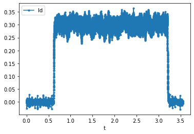

RL Estimation¶
This document describes System Identification based on the Frequency Response Function method.
Introduction¶
Controller design and tuning for any plant depends heavily on the plant parameters and hence it is important to accurately estimate the plant model. One method to do this estimation is to take a look at the frequency response of the plant (output) to a commanded input containing range of frequncies (e.g.: random noise).
General Steps¶
Steps for System ID of RL load:
Collect the current regulation command tracking (CT) frequency response function (FRF)
Tune the PI regulators to a “small” bandwidth (e.g. 100Hz) and set the fundamental frequency to 0Hz (i.e. no rotating current, dc values)
Inject noise for the current reference
Id*orIq*– ensure the amplitude of the noise is small enough that the voltage commands do not saturate (e.g. try 0.5A peak noise)Collect the time-domain signals for the commanded current and actual current over about 1 sec, sampled at the control frequency (i.e. 10kHz)
Using the provided MATLAB scripts, compute the estimated CT FRF:
I(s) / I*(s)Find the -3dB point on the FRF and identify the actual bandwidth of the current regulator (it may not match the tuned bandwidth)
Perform system identification to estimate the effective
RandLvalues as seen by the control systemDetune the PI regulators to a few Hz (e.g. try 1Hz)
Inject noise for the dq voltage outputs
Vd*andVq*, one at a timeCollect the time-domain signals for the commanded voltage and actual current over about 1 sec, sampled at the control frequency (i.e. 10kHz). If using PWM for the voltage output, make sure the switching freq is sufficiently high that it can be ignored and approximated as idealized voltage source (e.g., switch at 50-100kHz), but not too high such that dead-time effects start to become significant
Using the provided MATLAB scripts, compute the estimated system impedance FRF:
I(s) / V(s)Curve fit the low and high frequency portions of the resulting FRF to find the estimated resistance
Rand inductanceL
Retune the PI controllers based on the new estimated parameters for
RandLNote how much the “datasheet” values differ from the estimated values
Recollect the current regulation CT FRF (see step 1 above)
Verify the bandwidth matches the tuned bandwidth (e.g. -3dB point matches)
Example Results¶
System Identification procedure will be explained here using a three phase R-L load connected to an inverter as an example.
It is easier to analyze a three phase system in synchronous reference frame and hence, applying KVL across the load loop in synchronous reference frame gives a condensed voltage equation as:
Which gives the plant (Load) transfer function as:
The resistance and inductance values can be directly taken from the datasheet if the load is known. However, the actual load seen by the inverter differs from these datasheet values because of various other contributing elements like power loop resistance, parasitic inductance, etc.
To accurately estimate the plant parameters, a Frequency Response Function FRF of the plant can be generated and the plant parameters can be extracted from that.
To generate a plant’s frequency response, following steps can be followed:
A noise signal
V*should be injected into the plant (If there is any other element (like a controller) in the loop, make sure to bypass it (by making controller bandwidth very low)). In synchronous reference frame, a noise voltage in d-axis or q-axis circuitVd* or Vq*,can be injected one at a time.Capture the current signal in time domain, generated in response to the injected noise for about
1 secondThe frequency response function
FRF, \((V(s)/I(s))\) can be generated using thegenerateFRFMATLAB function as shown in figure below See the example code:plot_FRF.mandgenerateFRF.m.
Example Frequency Response Function of the R-L load:

The frequency response function
FRFis also the inverse of the load impedance \(1/Z(s)\) (i.e. admittance). For lower frequencies, the load can be estimated as a purely resistive load and for higher frequencies, the load can be estimated as a purely inductive loadEstimated resistance, \(R_{estimated}\) can be found by taking the inverse of the curve fitted value of
FRFat low frequencies and estimated inductive reactance, \(X_{L-estimated}\) can be found by taking the inverse of the curve fitted value of FRF at high frequencies. The value of inductance can be subsequently found using the \(X_L\) value.
The datasheet values for the R and L in the example case were 0.25 Ohm and 100 uH respectively. However, as it turns out, after performing
the system identification the estimated R and L values turn out to be 0.65 Ohm and 121 uH!
An important point to be noted for this exercise is that the current measurement needs to be accurate to achieve correct results. Before starting with this exercise, it is essential to ensure that the current measurements are precisely adjusted for gains and offsets.
Understanding the FRF Plot¶
The output of the generateFRF() function is four vectors: a vector of frequencies, then three vectors magnitude, phase and coherence
for values at each of these frequencies. The magnitude and phase output can be plotted to obtain the FRF function.
But what is the coherence output used for?
Coherence¶
Per the Wikipedia article:
Coherence is a statistical measure that indicates the relationship between the input and output data. It will always be between zero and one. For an ideal constant parameter linear system with a single input
x(t)and single outputy(t), the coherence will be equal to one.However, in the physical world an ideal linear system is rarely realized, noise is an inherent component of system measurement, and it is likely that a single input, single output linear system is insufficient to capture the complete system dynamics. Thus, the coherence will be less than one. If the coherence is less than one but greater than zero it is an indication that either: noise is entering the measurements, that the assumed function relating
x(t)andy(t)is not linear, or thaty(t)is producing output due to inputx(t)as well as other inputs. If the coherence is equal to zero, it is an indication thatx(t)andy(t)are completely unrelated.
From the above discussion, it is important to always plot the coherence of the FRF, with the goal of it approaching one across all frequencies.
If the coherence is low, the FRF data cannot be used to draw conclusions.
After System Identification!¶
As mentioned before, the controller design for any plant depends heavily on the plant parameters and inaccurate estimation of these
parameters would lead to inaccurate tuning of the controller. To check for the controller performance a similar FRF can be obtained
by injecting reference noise (e.g.: Id*) and capturing the resultant current Id in time domain and then plotting the FRF as explained
above.
The effect of accurately estimating the plant parameters for tuning can
be seen in figures below, where the intended bandwidth is 100 Hz and the bandwidth before system identification (Considering datasheet
values of R and L) was around 20 Hz! The bandwidth after using the estimated values from system identification is around 100 Hz, which is as required.
Before tuning:

After tuning:

This effect can be seen in the time domain as well, where we can see that the resulting current is more responsive to the noise when the controller is tuned using the estimated R and L values
Current response before tuning:

Current response after tuning: